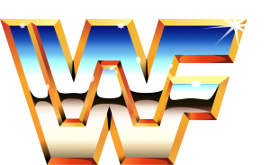
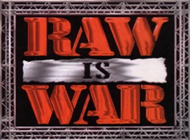

En 1982, Vince McMahon Jr. tomó el control de la empresa de su padre y comenzó a modernizar y expandir la WWWF. Cambió su nombre a World Wrestling Federation (WWF) y comenzó a transmitir sus programas en cable y en pay-per-view. Durante esta época, la WWF introdujo nuevos personajes ficticios y eventos, incluyendo el primer Royal Rumble y SummerSlam.

En los años 90, la WWF se convirtió en un fenómeno cultural y produjo algunas de las estrellas más grandes de la lucha libre, incluyendo a The Rock, Stone Cold Steve Austin y Hulk Hogan. También inició una guerra de marcas con su principal competidora, World Championship Wrestling (WCW). Finalmente, la WWF prevaleció en la guerra de marcas y absorbió a la WCW en 2001.

En los años 90, la WWF se convirtió en un fenómeno cultural y produjo algunas de las estrellas más grandes de la lucha libre, incluyendo a The Rock, Stone Cold Steve Austin y Hulk Hogan. También inició una guerra de marcas con su principal competidora, World Championship Wrestling (WCW). Finalmente, la WWF prevaleció en la guerra de marcas y absorbió a la WCW en 2001.
Decada de los 2000 en wwe
Después de la absorción de la World Championship Wrestling (WCW) en 2001, WWE continuó su expansión y creció en popularidad a nivel mundial. La empresa introdujo una serie de nuevos programas de televisión, incluyendo Raw y SmackDown, y continuó produciendo pay-per-view mensuales y eventos en vivo.

En los años 2000, WWE también comenzó a expandir su alcance más allá de los Estados Unidos, llevando sus espectáculos a una audiencia global y produciendo programas de televisión en diferentes idiomas. La empresa también comenzó a producir películas y programas de televisión fuera de los ring, incluyendo reality shows y programas de entretenimiento deportivo.
Además, WWE produjo algunas de las estrellas más grandes y emblemáticas de la lucha libre en la década de 2000, incluyendo a John Cena, Randy Orton, Batista, CM Punk y muchos otros. La empresa también se convirtió en una compañía pública cotizada en bolsa en 1999 y continuó creciendo en términos de ingresos y popularidad.


En los últimos años, WWE ha enfocado en fortalecer su presencia en línea y en las redes sociales, incluyendo la creación de su propia plataforma de transmisión en línea, WWE Network. La empresa también ha continuado produciendo programas de televisión fuera de los ring y películas, y ha lanzado una serie de videojuegos basados en luchadores y eventos.

Desde 2010, WWE también ha producido algunas de las estrellas más grandes y emblemáticas de la lucha libre, incluyendo a Roman Reigns, Bray Wyatt, AJ Styles, Becky Lynch y muchos otros. La empresa también ha seguido creciendo en términos de ingresos y popularidad, y ha fortalecido su presencia en el mercado internacional.
En los años 2000, WWE también comenzó a expandir su alcance más allá de los Estados Unidos, llevando sus espectáculos a una audiencia global y produciendo programas de televisión en diferentes idiomas. La empresa también comenzó a producir películas y programas de televisión fuera de los ring, incluyendo reality shows y programas de entretenimiento deportivo.
Además, WWE produjo algunas de las estrellas más grandes y emblemáticas de la lucha libre en la década de 2000, incluyendo a John Cena, Randy Orton, Batista, CM Punk y muchos otros. La empresa también se convirtió en una compañía pública cotizada en bolsa en 1999 y continuó creciendo en términos de ingresos y popularidad.
De los 2000 a la actualidad
Desde la década de 2010, WWE ha continuado su expansión y crecimiento a nivel global. La empresa ha introducido nuevos programas de televisión, incluyendo NXT y 205 Live, y ha continuado produciendo eventos en vivo y pay-per-view mensuales.
En los últimos años, WWE ha enfocado en fortalecer su presencia en línea y en las redes sociales, incluyendo la creación de su propia plataforma de transmisión en línea, WWE Network. La empresa también ha continuado produciendo programas de televisión fuera de los ring y películas, y ha lanzado una serie de videojuegos basados en luchadores y eventos.
Desde 2010, WWE también ha producido algunas de las estrellas más grandes y emblemáticas de la lucha libre, incluyendo a Roman Reigns, Bray Wyatt, AJ Styles, Becky Lynch y muchos otros. La empresa también ha seguido creciendo en términos de ingresos y popularidad, y ha fortalecido su presencia en el mercado internacional.